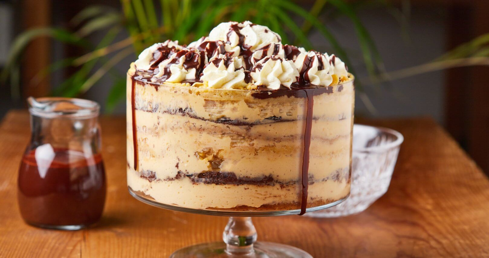
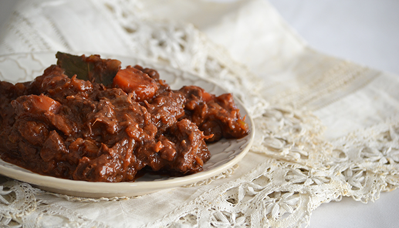
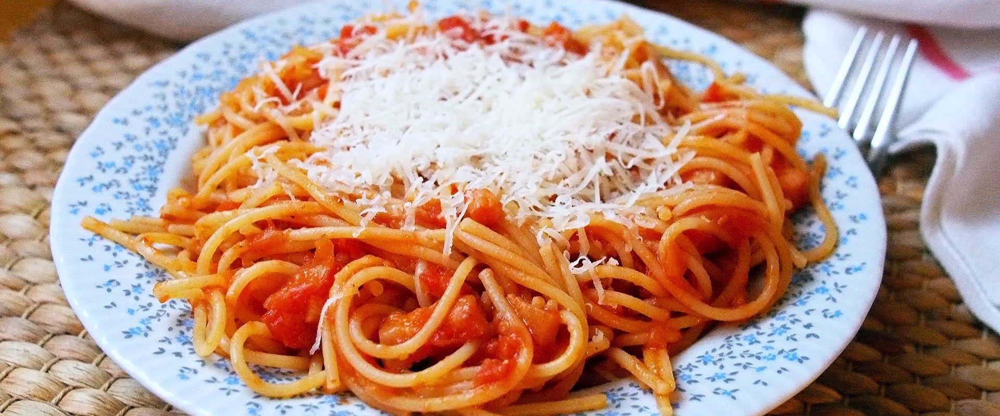

Somlói Galuska
Hozzávalók:
- 30 dkg liszt
- 15 dkg cukor
- 5 tojás
- 1 púpos teáskanál sütőpor
- 1 csipet só
Elkészítés:
- A tojásokat a cukorral habosra keverjük, hozzáadjuk a lisztet, a sütőport és a sót.
- A tésztát egy 28 cm átmérőjű, lisztezett tortaformában sütjük 180 fokos sütőben 30 percig.
- A meleg piskótát 4 egyenlő részre vágjuk, az alsó rétegre tegyük a pudingot, rátesszük a második réteget, megint pudingot teszünk rá és így tovább a negyedik rétegig.
- A torta tetejét és oldalát is pudinggal kenjük be, és a tetejét kakaóporral meghintjük.
Marhapörkölt
Hozzávalók:
- 500 g marhapörkölt alap
- 1 fej vöröshagyma
- 2 gerezd fokhagyma
- 1 db paprika
- 2 evőkanál liszt
- 1 dl redőnyös bor
- 1 dl tejföl
- só, bors ízlés szerint
Elkészítés:
- A hagymát és a fokhagymát kockázzuk, a paprikát aprítjuk.
- Egy nagyobb edényben a hagymát megpirítjuk, majd hozzáadjuk a fokhagymát és a paprikát.
- Hozzáadjuk a marhapörkölt alapot, és összesütjük a hozzávalókat.
- Hozzáadjuk a lisztet, majd a bort, és körülbelül 10 percig főzzük.
- Végül hozzáadjuk a tejfölt, és ízesítjük sóval és borssal.
- Még további 5 percig főzzük, majd tálaljuk.
Spagetti
Hozzávalók:
- 400 g spagetti
- 1 nagy fej vöröshagyma
- 3 gerezd fokhagyma
- 1 nagy csomag paradicsom
- 1 teáskanál cukor
- só
- bors
- olaj
- bazsalikom
Elkészítés:
- A vöröshagymát és a fokhagymát apróra vágd.
- Az olajat egy serpenyőben melegítsd fel és pirítsd meg a hagymát és a fokhagymát.
- Adj hozzá paradicsomot és fűszerezd cukorral, sóval, borssal és bazsalikommal.
- Főzd puhára a paradicsomot kb. 20 perc alatt.
- Főzd meg a spagettit al dente állagban.
- Szűrd le a spagettit és keverd össze a paradicsomos mártással.
- Tálald és élvezd az ízletes spagetti élményt!